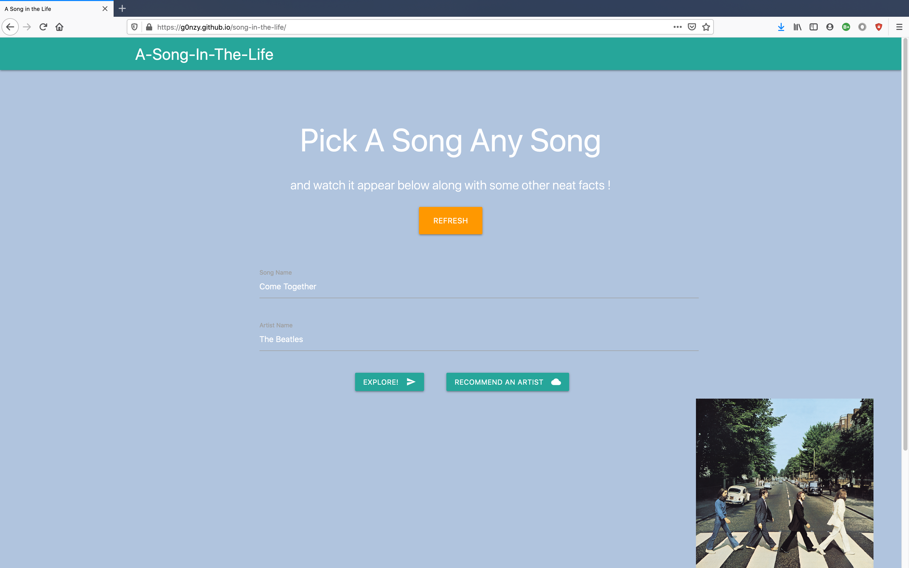

Song In The Life
Github Link

A Song in the Life
Project Description
The ideal instantiation of this project will give the user an expansive experience through the medium of song choice. The user will choose a song and, upon the click of a button, written information about that song will appear, including the album from which it comes and when it was recorded. Additionally, a photo of the album will appear along with further song and artist suggestions based on similarities to the chosen song. These suggestions will have Wikipedia and YouTube links. The app will also display historical information based on the time period of the chosen song.
Deployed Link
A Song in the Life
Project Status
The current project has reached the level of Minimum Viable Product (MVP). Further iterations are under consideration and will be discussed in the Future Development section below.
Division of Labor
Project Manager: Joe Dvorak HTML and CSS: Frank Cabrera - (https://materializecss.com/) Javascript: Joe Dvorak - (https://musicbrainz.org/doc/Development/XML_Web_Service/Version_2), (https://wiki.musicbrainz.org/Cover_Art_Archive/API), (https://en.wikipedia.org/w/api.php) Austin Ricketts - (https://tastedive.com/api) README: Austin Ricketts
User Story
If our memories are like websites in the vast mind of the internet, then songs are the hyperlinks that will bring us to them.
I’m often mistaken for looking younger than I am. I graduated from college more than a decade ago. Even still, there is a particular album that, when I press play, takes me back immediately to what I saw and heard and felt in that time. A span of more than ten years is traveled in a millisecond or less.
We recognize that this power of music is a common experience. For so many people, music can conjure another time or place, taking them back to a day in their life almost forgotten. Music can work on the memory in a way other media can’t. We wanted in some small way to return the favor to music and open up the possibility for this discovery to any user who might click on our site.
To recreate an experience like this, a user can choose a song and artist. They will then be presented with a picture of the album cover, data about the recording of the album and song, as well as suggestions for similar artists, including a Wikipedia page and YouTube link to related songs. Our hope is that this site will give a fuller experience of the chosen song, where hyperlinks and the user’s memory coincide to open a vast, imaginative potential.
APIs
https://musicbrainz.org/doc/Development/XML_Web_Service/Version_2
https://tastedive.com/read/api
https://en.wikipedia.org/w/api.php
Opening Page View Search Button and Album Cover Historical Fact from the time period of the song Suggestions for related artists Chosen Song and Album Information Album Cover Photo for song choice
Future Development
For some albums, the album art is not saved. It could be best to find another api that could replace that photo with the photo of the artist
It would increase functionality to be able to include the results received from the Tastedive api back into the search, yielding longer chains of suggestions.
We would like to find an api that could send us some music streaming information, in order to have the chosen song playing in the background of the site.
Along similar lines, it would be cool to work with the z-index and have a video of the chosen song become the background visual of the website, using the YouTube api.